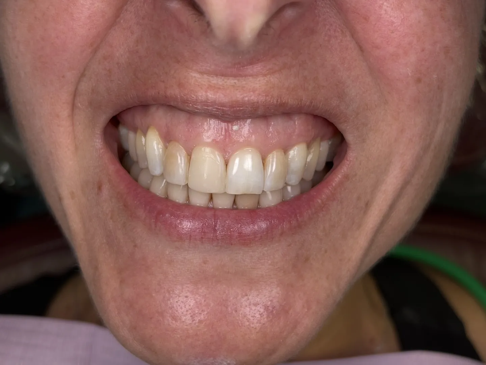

Same-Day Care
Same-day emergency care.
Toothache, a broken tooth or a lost crown? Call the office nearest you. We often see patients in pain the same day, and our Stamford office accepts walk-in emergency patients.
Dentistry & Implants
From a single implant to a full new smile, and from a cleaning to a cracked tooth on a Friday afternoon.
Implant Dentistry
A missing tooth, replaced by a surgeon who teaches the technique.

Implant Dentistry
For the right patient, an implant and a temporary tooth in one visit.

Full-Mouth Reconstruction
A full set of fixed teeth on implants.

Cosmetic and Restorative
See your new smile in a digital preview before any tooth is touched.

Before After
AfterCosmetic and Restorative
Older metal-based crowns replaced with zirconia.

Saving Natural Teeth
Removes the source of the pain, seals the tooth, and lets you keep it.
Family Dentistry
Thorough exams, cleanings and X-rays that protect your smile for the long term.
Gum disease diagnosis and treatment, from deep cleanings to ongoing maintenance.
Fillings, crowns, bridges and more to repair damaged or decayed teeth.
We often see patients in pain the same day.
Gentle removal of damaged teeth and wisdom teeth, including surgical extractions.
Professional whitening in the office or at home, on its own or as part of a makeover.
Clear, removable aligners to straighten teeth with a plan built around your routine.
Full and partial dentures, and implant options for patients who want something that does not move.
Three Offices
Call the office closest to you, or book online any time.
Complimentary new patient consultation at Mount Kisco, Kent and Stamford.